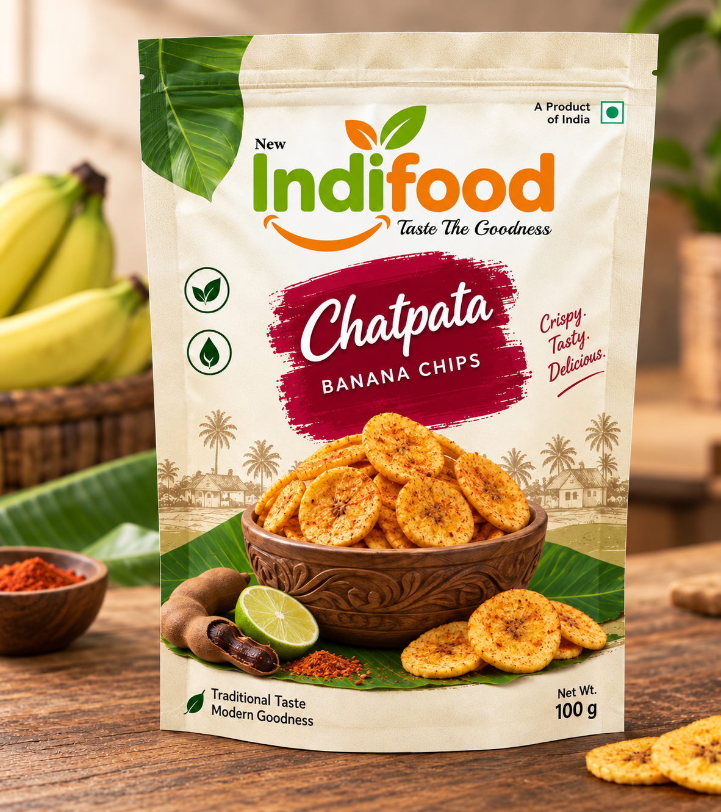
Chatpata banana chips. A handful of happiness.
Explore flavour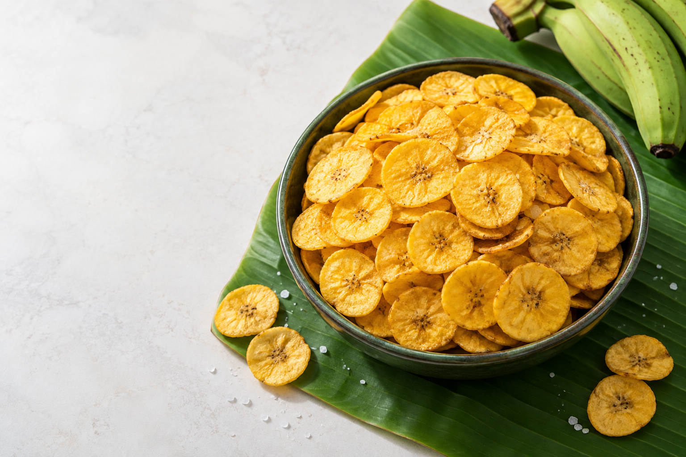
Deliciously crispy banana chips made with high-quality oil, prepared with care for better taste, quality, and freshness.
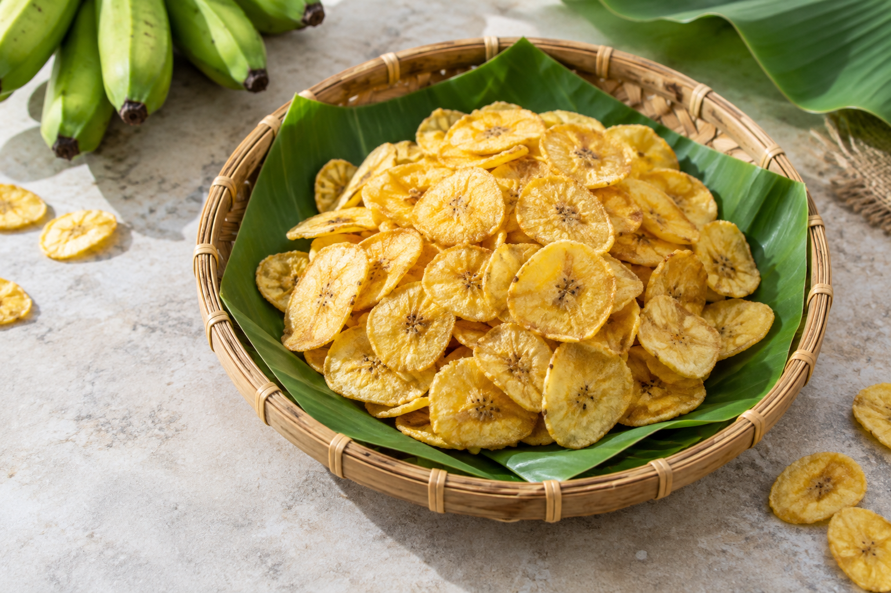
Authentic Indian taste.Welcome to New Indifood, where “Indi” represents Indian and “Food” represents authentic food.
Since 2018, we have been serving our customers fresh, hygienically prepared, crispy banana chips in a variety of delicious flavours. Our focus is on maintaining high standards of quality, hygiene, taste, and customer satisfaction in every pack.
About New IndifoodFrom a small snack pack to a larger family pack, an option for every requirement.

Chatpata banana chips. A handful of happiness.
Explore flavour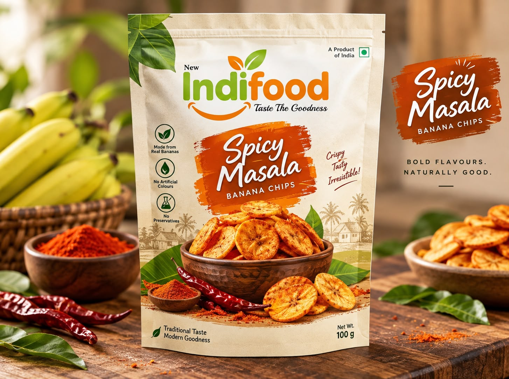
Masala banana chips. A handful of happiness.
Explore flavour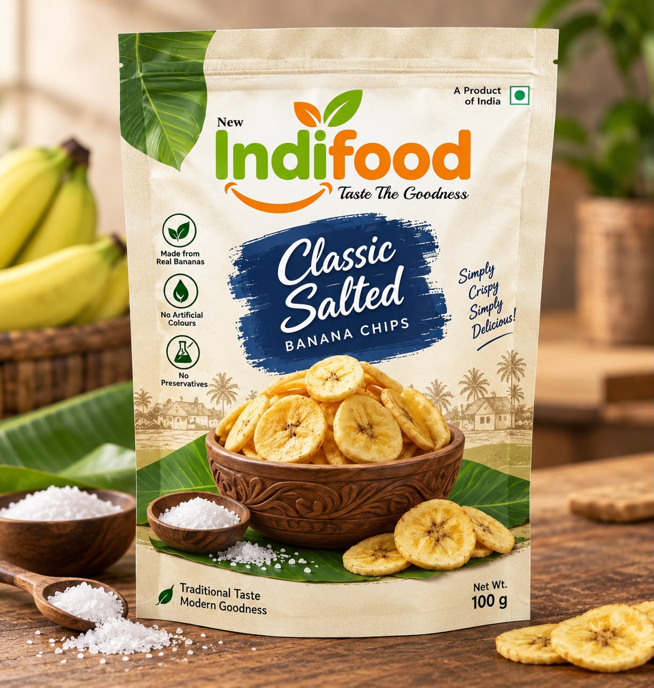
Salted banana chips. A handful of happiness.
Explore flavour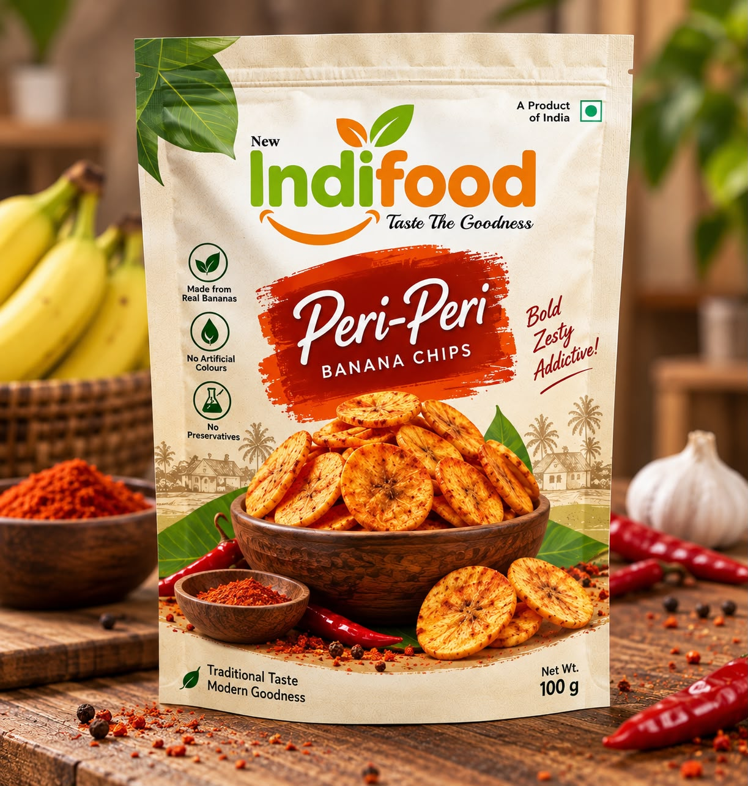
Peri Peri banana chips. A handful of happiness.
Explore flavour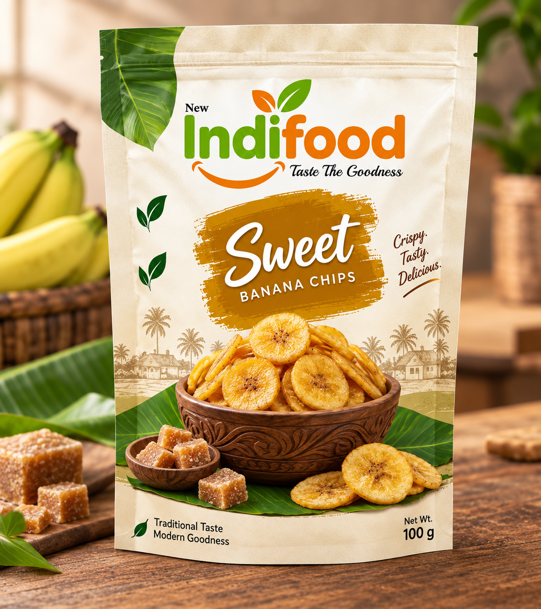
Sweet banana chips. A handful of happiness.
Explore flavour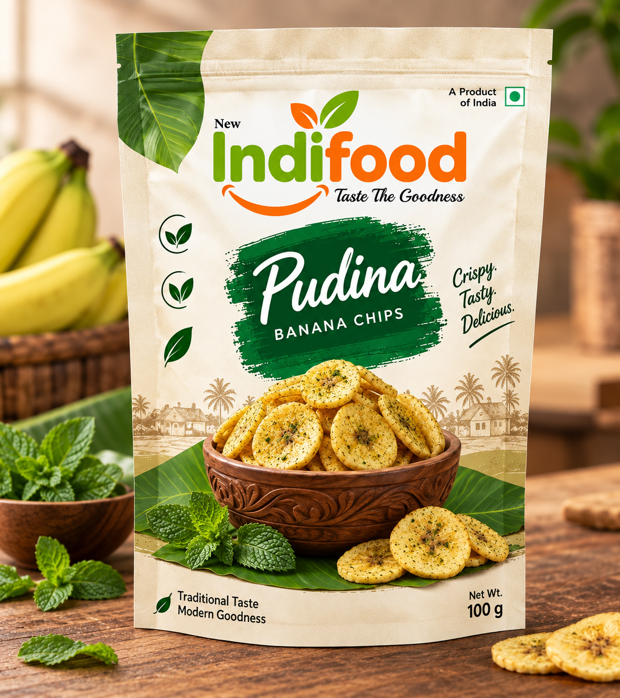
Pudina banana chips. A handful of happiness.
Explore flavour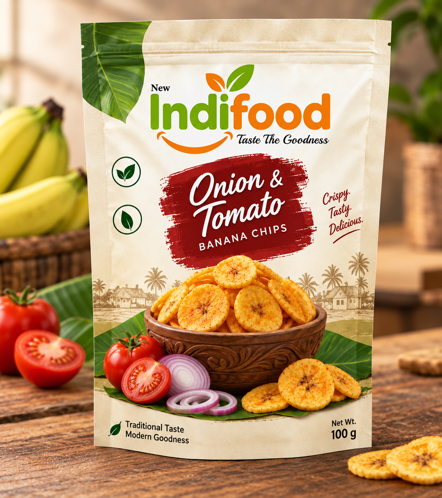
Onion & Tomato banana chips. A handful of happiness.
Explore flavour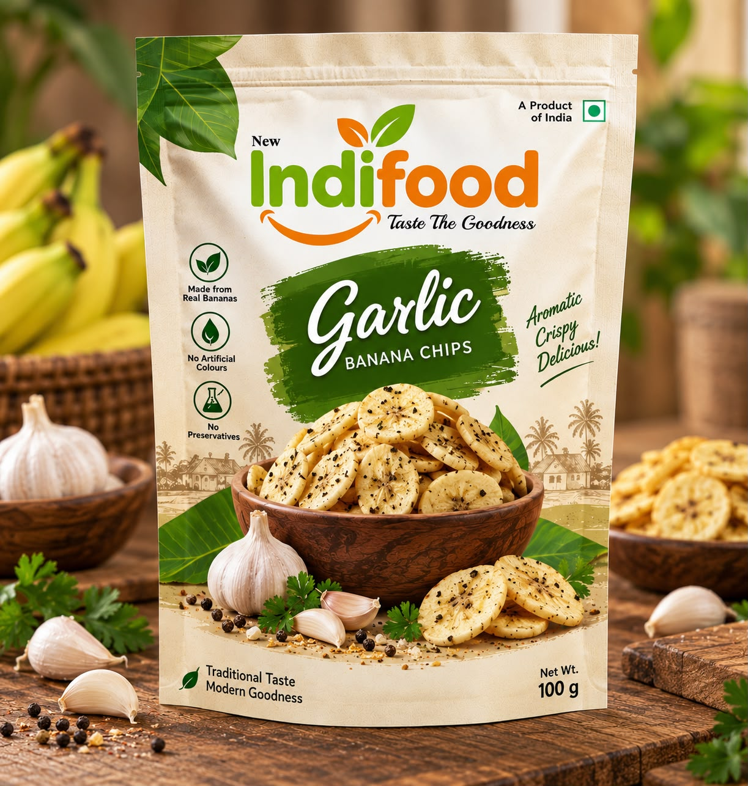
Garlic banana chips. A handful of happiness.
Explore flavour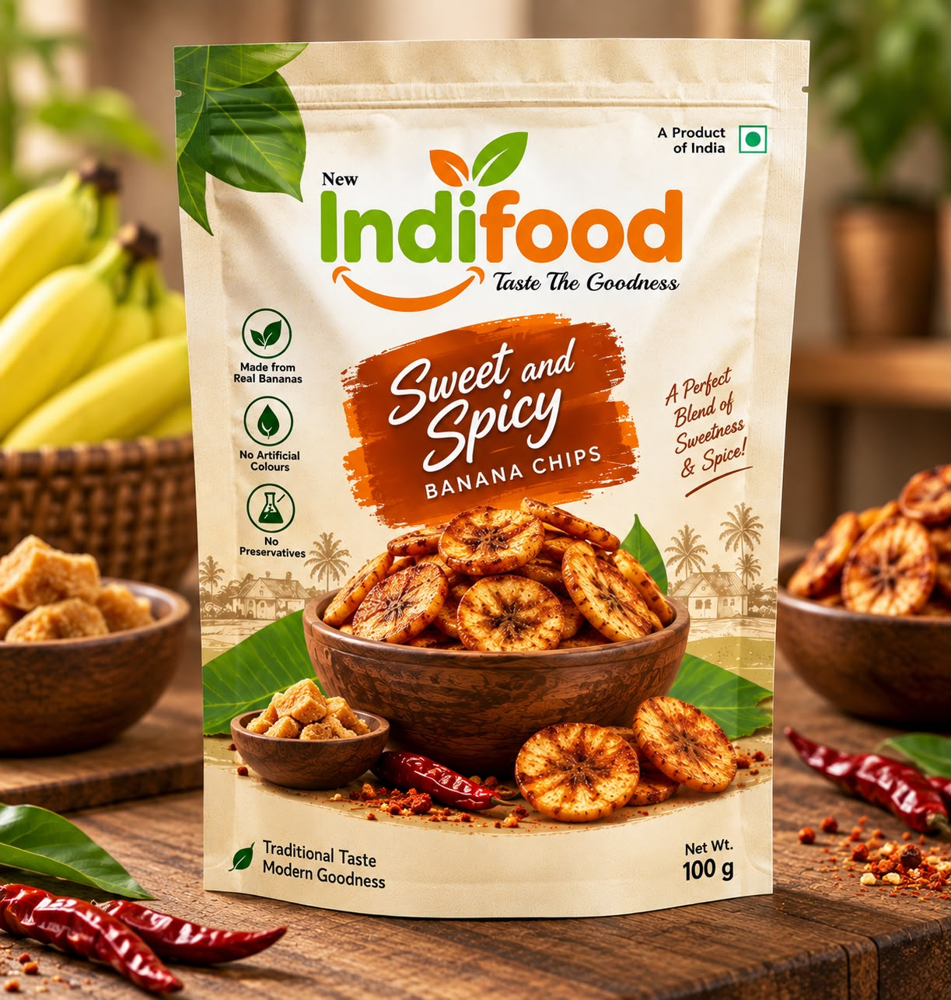
Sweet & Spicy banana chips. A handful of happiness.
Explore flavourWe use high-quality oil for preparing our banana chips and do not reuse previously used cooking oil. This helps us maintain consistent taste, freshness, and product quality.
Cleanliness is a top priority at New Indifood. Our workers use hand gloves and head caps during production, and our machines and production areas are cleaned regularly.
We follow applicable Food Safety standards, hygiene practices, and manufacturing guidelines to ensure safe and quality products for our customers.
Our banana chips are carefully prepared and packed to preserve their signature crunch, flavour, and freshness.
Stocking your shelves or planning a bigger occasion?
Let's start with your requirements.